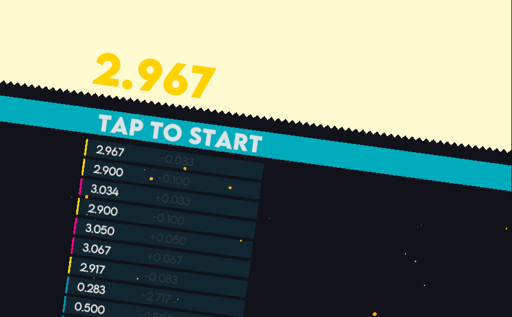
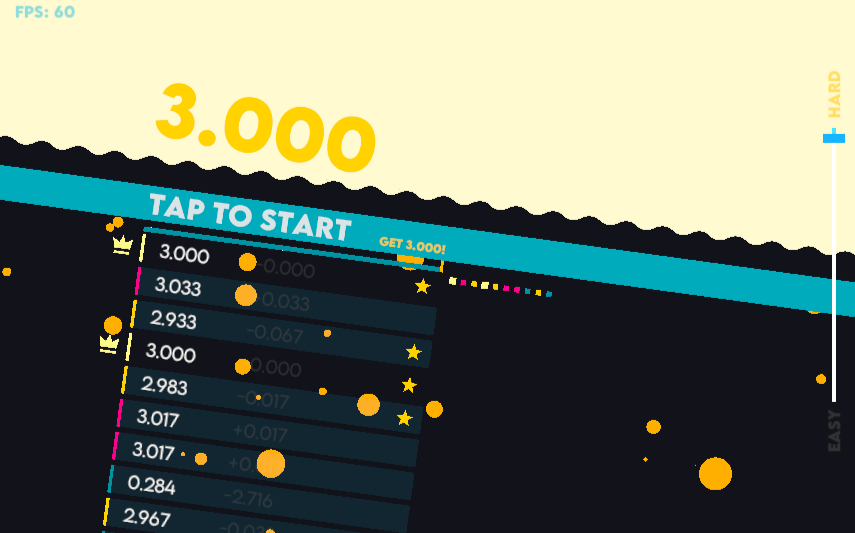
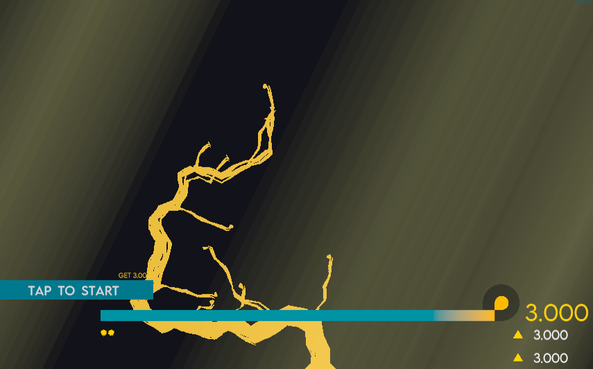
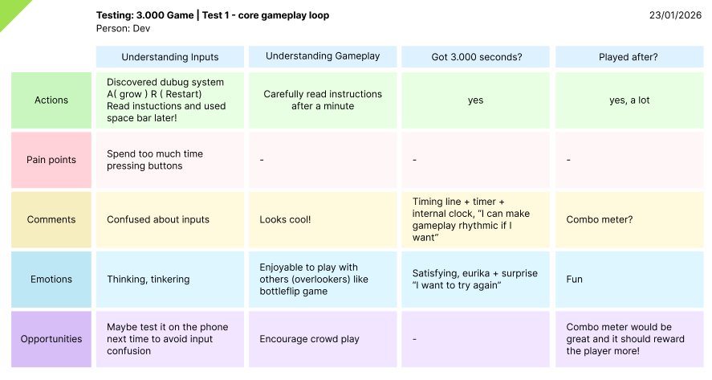
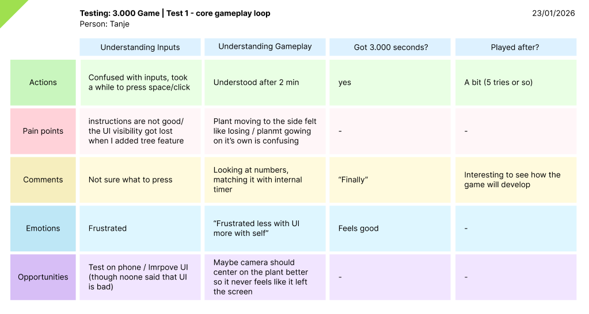
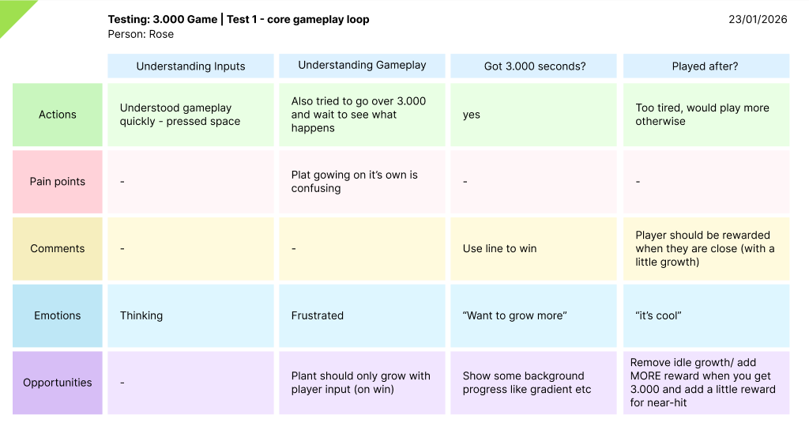
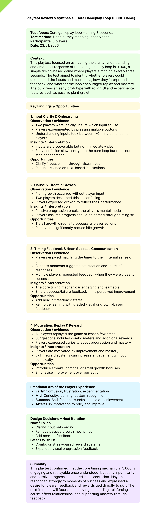

Initial Title and Concept Developemt
The initial idea came from encountering a physical timing cabinet at BrewDog in Waterloo. The cabinet features a large red button: you press it once to start a timer and press it again to stop, with the goal of timing it exactly to 10 seconds in order to “pour a perfect pint.” The interaction is extremely simple, but surprisingly engaging. I was immediately drawn to how minimal the mechanics were, yet how compelling it felt to play.
This experience directly inspired me to explore a digital version of the same idea. I was interested in whether this kind of timing challenge could work as an app, using the same basic interaction: press to start, press to stop, and aim for a precise target time. After a few weeks, I began developing an early prototype called Count to 10. At this stage, the game consisted only of a timer counting upwards from zero, and the player’s goal was to stop it at exactly 10 seconds, closely mirroring the original inspiration.
During development, however, testing a 10-second loop repeatedly began to feel slow and cumbersome. As a temporary measure, I reduced the target time to 3.000 seconds to speed up iteration. Unexpectedly, this change revealed something interesting: the shorter timing window felt more intense, more replayable, and created a much faster and more satisfying game loop. I experimented with other durations, such as 2 and 5 seconds, but 3 seconds consistently felt the most engaging. I found myself wanting to retry immediately and hit the correct time over and over again.
When I shared this version with friends, their reactions mirrored my own. While they noted that the mechanic itself was extremely simple—and technically something you could replicate using a clock app—they highlighted that the difference lay in the feedback. Successfully hitting 3 seconds produced a strong sense of reward, and the feedback made the action feel purposeful and game-like. I couldn’t immediately think of a similar concept on iOS that focused so narrowly on timing and feedback, which encouraged me to continue refining the idea. At this point, the prototype was no longer just an experiment; it was starting to feel like a game.
This experience directly inspired me to explore a digital version of the same idea. I was interested in whether this kind of timing challenge could work as an app, using the same basic interaction: press to start, press to stop, and aim for a precise target time. After a few weeks, I began developing an early prototype called Count to 10. At this stage, the game consisted only of a timer counting upwards from zero, and the player’s goal was to stop it at exactly 10 seconds, closely mirroring the original inspiration.

During development, however, testing a 10-second loop repeatedly began to feel slow and cumbersome. As a temporary measure, I reduced the target time to 3.000 seconds to speed up iteration. Unexpectedly, this change revealed something interesting: the shorter timing window felt more intense, more replayable, and created a much faster and more satisfying game loop. I experimented with other durations, such as 2 and 5 seconds, but 3 seconds consistently felt the most engaging. I found myself wanting to retry immediately and hit the correct time over and over again.
When I shared this version with friends, their reactions mirrored my own. While they noted that the mechanic itself was extremely simple—and technically something you could replicate using a clock app—they highlighted that the difference lay in the feedback. Successfully hitting 3 seconds produced a strong sense of reward, and the feedback made the action feel purposeful and game-like. I couldn’t immediately think of a similar concept on iOS that focused so narrowly on timing and feedback, which encouraged me to continue refining the idea. At this point, the prototype was no longer just an experiment; it was starting to feel like a game.
Early Informal Playtesting (Face-to-Face)
At this stage, playtesting was informal and tightly integrated into development. The prototype consisted of a very minimal setup: a numerical timer counting from 0.000 upwards, simple on-screen instructions, and a list of previous attempts showing the player’s last recorded times. The challenge was straightforward—stop the timer at exactly 3.000 seconds—but hitting that target was extremely difficult.
One important limitation of this early version was that the timing logic did not yet account for frame rate. Because the game updated in discrete steps, performance differences could affect accuracy, meaning that on lower frame rates the game could feel unfair. At this point, there was no hidden tolerance or threshold; success was displayed purely as a number. Internally, anything above roughly 2.900 seconds was considered a success, but the interface still showed the exact recorded value (e.g. 2.9xx), which made perfect accuracy feel elusive.
Despite this, when I shared the game with friends and later uploaded it to itch.io, players were unexpectedly compelled to keep trying until they hit exactly 3.000. Even knowing that the system wasn’t always fair, the challenge remained engaging. This suggested that the core loop was strong enough to motivate repetition, even under imperfect conditions. Seeing strangers engage with the game—beyond my immediate circle—was particularly valuable, as it confirmed that the appeal wasn’t limited to familiarity or context.
Feedback during this phase was gathered through observation, conversation, and comments left on the itch.io page. Players generally accepted the difficulty, but several consistent points emerged. They wanted clearer visibility of their previous attempts, enjoyed comparing results, and began to express a desire for some sense of progression beyond simply hitting the target time. While these ideas weren’t acted on immediately, they indicated directions worth exploring later.
Visually, the game already had a strong identity. I drew heavily on Bauhaus-inspired design principles, focusing on bold colour, simple shapes, and clarity. At this stage, no external assets were used, which helped keep the presentation cohesive and intentional. Although the mechanics were still rough and technically imperfect, this early version played a crucial role in validating the concept and providing momentum to move forward.
One important limitation of this early version was that the timing logic did not yet account for frame rate. Because the game updated in discrete steps, performance differences could affect accuracy, meaning that on lower frame rates the game could feel unfair. At this point, there was no hidden tolerance or threshold; success was displayed purely as a number. Internally, anything above roughly 2.900 seconds was considered a success, but the interface still showed the exact recorded value (e.g. 2.9xx), which made perfect accuracy feel elusive.
Despite this, when I shared the game with friends and later uploaded it to itch.io, players were unexpectedly compelled to keep trying until they hit exactly 3.000. Even knowing that the system wasn’t always fair, the challenge remained engaging. This suggested that the core loop was strong enough to motivate repetition, even under imperfect conditions. Seeing strangers engage with the game—beyond my immediate circle—was particularly valuable, as it confirmed that the appeal wasn’t limited to familiarity or context.
Feedback during this phase was gathered through observation, conversation, and comments left on the itch.io page. Players generally accepted the difficulty, but several consistent points emerged. They wanted clearer visibility of their previous attempts, enjoyed comparing results, and began to express a desire for some sense of progression beyond simply hitting the target time. While these ideas weren’t acted on immediately, they indicated directions worth exploring later.

Visually, the game already had a strong identity. I drew heavily on Bauhaus-inspired design principles, focusing on bold colour, simple shapes, and clarity. At this stage, no external assets were used, which helped keep the presentation cohesive and intentional. Although the mechanics were still rough and technically imperfect, this early version played a crucial role in validating the concept and providing momentum to move forward.
Decision to Use a Structured Playtesting Method
By this point in development, the game had reached a version that was very close to my original vision. The major technical issues around timing had been resolved, including fixing the time-step problem so that hitting 3.000 seconds felt consistent and fair across different frame rates. Visually and mechanically, the game had also evolved significantly. A procedural plant was introduced into the background, growing when the player successfully hit the target time. This gave the experience a sense of ongoing progress, and importantly, meant the game loop no longer fully reset after each win or loss.
Reaching this stage marked a turning point. Up until now, face-to-face playtesting had worked well, but as the game became more complex it started to show its limits. There were simply too many small suggestions, reactions, and ideas coming from different players to hold in my head at once. I found myself needing a way to document feedback properly and, more importantly, to prioritise it based on what the game actually needed—rather than what I happened to remember or what felt exciting to add in the moment.
This version of the game was also a substantial redesign. A timing line was introduced to help players judge the 3-second interval, although interestingly, some players preferred relying on their internal sense of timing rather than the visual aid. The numerical timer was reduced in size and repositioned, as it was no longer the main focus of the experience. Instead, the plant in the background became the primary indicator of progression. During development, I experimented with allowing the plant to grow slowly and passively over time, but this quickly introduced ambiguity. Players sometimes interpreted passive growth as a result of their own action, which blurred the cause-and-effect relationship. This highlighted the need to remove passive growth and reinforce clarity around player agency.
Around the same time, I had been researching User Journey Mapping as part of developing teaching materials, and I found the framework particularly useful. Concepts such as actions, emotions, comments, pain points, and opportunities closely aligned with how I already thought about player experience, but offered a clearer structure and shared language. Rather than thinking loosely in terms of “friction” or “feedback,” the method provided a way to capture the player’s experience step by step.
I decided to apply this approach to the game by mapping it as a short user journey: understanding inputs → understanding gameplay → hitting 3.000 → playing after success. These stages felt sufficient for evaluating the core loop. I asked three colleagues to play the game without explanation, as I had done previously, but this time I focused on prompting them to articulate their emotions and thoughts at specific moments. This proved extremely effective. Players were open about feeling confused, frustrated, or engaged, and the structure helped capture their train of thought without steering their behaviour.
At this point, the project had reached a stage where there was clearly “something to test.” While I naturally prefer developing over testing, this felt like the right moment to pause and reflect. The structured feedback revealed unexpected outcomes—such as players being comfortable working through some UI ambiguity on their own—as well as new ideas, like rewarding near-success by allowing the plant to grow slightly even when the player narrowly missed the target.
To make sense of this data, I created a Playtest Review & Synthesis document. This allowed me to convert raw observations into clear insights and actionable design opportunities. Having everything written down made an immediate difference: priorities became clearer, a distinction emerged between immediate changes and longer-term ideas, and the overall process felt far less overwhelming. Rather than feeling constrained by the feedback, I felt energised by it. The document clarified the next steps and made me eager to return to development with a stronger sense of direction.

Reaching this stage marked a turning point. Up until now, face-to-face playtesting had worked well, but as the game became more complex it started to show its limits. There were simply too many small suggestions, reactions, and ideas coming from different players to hold in my head at once. I found myself needing a way to document feedback properly and, more importantly, to prioritise it based on what the game actually needed—rather than what I happened to remember or what felt exciting to add in the moment.
This version of the game was also a substantial redesign. A timing line was introduced to help players judge the 3-second interval, although interestingly, some players preferred relying on their internal sense of timing rather than the visual aid. The numerical timer was reduced in size and repositioned, as it was no longer the main focus of the experience. Instead, the plant in the background became the primary indicator of progression. During development, I experimented with allowing the plant to grow slowly and passively over time, but this quickly introduced ambiguity. Players sometimes interpreted passive growth as a result of their own action, which blurred the cause-and-effect relationship. This highlighted the need to remove passive growth and reinforce clarity around player agency.
Around the same time, I had been researching User Journey Mapping as part of developing teaching materials, and I found the framework particularly useful. Concepts such as actions, emotions, comments, pain points, and opportunities closely aligned with how I already thought about player experience, but offered a clearer structure and shared language. Rather than thinking loosely in terms of “friction” or “feedback,” the method provided a way to capture the player’s experience step by step.
I decided to apply this approach to the game by mapping it as a short user journey: understanding inputs → understanding gameplay → hitting 3.000 → playing after success. These stages felt sufficient for evaluating the core loop. I asked three colleagues to play the game without explanation, as I had done previously, but this time I focused on prompting them to articulate their emotions and thoughts at specific moments. This proved extremely effective. Players were open about feeling confused, frustrated, or engaged, and the structure helped capture their train of thought without steering their behaviour.
At this point, the project had reached a stage where there was clearly “something to test.” While I naturally prefer developing over testing, this felt like the right moment to pause and reflect. The structured feedback revealed unexpected outcomes—such as players being comfortable working through some UI ambiguity on their own—as well as new ideas, like rewarding near-success by allowing the plant to grow slightly even when the player narrowly missed the target.
To make sense of this data, I created a Playtest Review & Synthesis document. This allowed me to convert raw observations into clear insights and actionable design opportunities. Having everything written down made an immediate difference: priorities became clearer, a distinction emerged between immediate changes and longer-term ideas, and the overall process felt far less overwhelming. Rather than feeling constrained by the feedback, I felt energised by it. The document clarified the next steps and made me eager to return to development with a stronger sense of direction.
Structured Playtesting: User Journey Mapping
Over the years, while researching different playtesting methods, I’ve found that many of them are straightforward and conceptually sound—but only if the designer is able to patiently and honestly understand what players actually need. That skill is not easy to acquire. For me, User Journey Mapping helps make this process more accessible. Coming from UX, which is closely adjacent to game design and places strong emphasis on experience, the method immediately made sense. I am interested in using tools that feel appropriate to the problem I am trying to solve, rather than applying methods for their own sake.
User Journey Mapping, combined with a synthesis document, offered something I was specifically looking for at this stage: a way to externalise my thinking. Rather than holding multiple pieces of feedback, ideas, and priorities in my head—and constantly bouncing between them—I could write everything down in one place. This reduced ambiguity and made it much easier to see what mattered most. Putting the experience on paper clarified priorities and removed the noise that often comes from trying to remember and weigh feedback informally.
For this project, I focused on capturing a very specific experience journey: the core gameplay loop. In this case, that meant mapping the stages of understanding input → understanding gameplay → hitting 3.000 → playing after success. These stages were not chosen because they were universal, but because they accurately reflected the short, focused loop of this game. With such a tight interaction cycle, it made sense to evaluate whether players understood the controls, grasped the mechanic, experienced satisfaction on success, and felt motivated to continue playing. In a different game, these stages would likely look very different.
When running the sessions, I asked three colleagues if they had five minutes to play the game and share their thoughts. I deliberately avoided explaining the game or the User Journey Mapping framework. Instead, I observed and took notes as they played, allowing them to speak freely. At certain key moments—such as successfully hitting or narrowly missing 3.000 seconds—I prompted them with simple questions, such as what they were feeling or thinking at that point. At the end, I asked if they had any overall comments related to the different stages of the experience.
This approach differed from my earlier face-to-face playtesting. The structure allowed me to capture small but important details that might otherwise be lost in conversation or overlooked in the moment. I was surprised by how much meaningful data I could gather from just three players. The journey maps captured a range of information, including actions, pain points, comments, emotional responses, and opportunities. Not every category was filled in for every stage, and that was fine; the gaps themselves helped highlight what was and wasn’t important to the experience.
My immediate impression was that this method felt both robust and efficient. Rather than fishing for feedback or relying on memory, the framework helped surface insights directly. It quickly became clear how this material could be refined further, which led naturally to the creation of a Playtest Review & Synthesis document. Bringing everything together in one place marked the next step in turning raw observations into clear, actionable design decisions.
User Journey Mapping, combined with a synthesis document, offered something I was specifically looking for at this stage: a way to externalise my thinking. Rather than holding multiple pieces of feedback, ideas, and priorities in my head—and constantly bouncing between them—I could write everything down in one place. This reduced ambiguity and made it much easier to see what mattered most. Putting the experience on paper clarified priorities and removed the noise that often comes from trying to remember and weigh feedback informally.
For this project, I focused on capturing a very specific experience journey: the core gameplay loop. In this case, that meant mapping the stages of understanding input → understanding gameplay → hitting 3.000 → playing after success. These stages were not chosen because they were universal, but because they accurately reflected the short, focused loop of this game. With such a tight interaction cycle, it made sense to evaluate whether players understood the controls, grasped the mechanic, experienced satisfaction on success, and felt motivated to continue playing. In a different game, these stages would likely look very different.



When running the sessions, I asked three colleagues if they had five minutes to play the game and share their thoughts. I deliberately avoided explaining the game or the User Journey Mapping framework. Instead, I observed and took notes as they played, allowing them to speak freely. At certain key moments—such as successfully hitting or narrowly missing 3.000 seconds—I prompted them with simple questions, such as what they were feeling or thinking at that point. At the end, I asked if they had any overall comments related to the different stages of the experience.
This approach differed from my earlier face-to-face playtesting. The structure allowed me to capture small but important details that might otherwise be lost in conversation or overlooked in the moment. I was surprised by how much meaningful data I could gather from just three players. The journey maps captured a range of information, including actions, pain points, comments, emotional responses, and opportunities. Not every category was filled in for every stage, and that was fine; the gaps themselves helped highlight what was and wasn’t important to the experience.
My immediate impression was that this method felt both robust and efficient. Rather than fishing for feedback or relying on memory, the framework helped surface insights directly. It quickly became clear how this material could be refined further, which led naturally to the creation of a Playtest Review & Synthesis document. Bringing everything together in one place marked the next step in turning raw observations into clear, actionable design decisions.
From Data to Insight – Playtest Review & Synthesis.
When I first gathered the User Journey Maps, they appeared messy and, at times, difficult to interpret. On their own, the notes did not always make immediate sense, and taken individually they felt fragmented. However, when I sat down to process and interpret them more carefully, patterns began to emerge that were not obvious during the sessions themselves. This highlighted an important distinction between collecting data and understanding it.
As I worked through the material, I found that many design decisions could be formed using a simple structure: evidence → interpretation → opportunity. This framework helped me rationally identify where the game needed improvement and why. Even when players used different language to describe their experience, the same feedback often echoed across multiple journey maps. Seeing these repeated signals side by side made it much easier to distinguish meaningful patterns from isolated comments.
One of the most valuable outcomes of this process was the ability to identify an emotional arc across the experience. By mapping how players felt at particular moments—such as confusion during onboarding, tension while timing the action, or satisfaction after success—I could better understand how the game was being experienced moment to moment. This is especially useful in a game with a short loop, as it allows individual interactions to be designed more intentionally, based on how players are feeling rather than just what they are doing.
The synthesis document also made it easy to compile a clear set of priorities. By separating immediate design actions from longer-term ideas, I was able to create a focused “now” list alongside a later wishlist. This provided clear guidance for next steps and removed the pressure to act on every idea at once. Importantly, everything was contained in a single document, making it easy to review the findings as a whole or return to specific points when needed. Nothing felt scattered or lost.
This process had a noticeable impact on my decision-making. Before creating the synthesis, I had a strong vision for the game but found it difficult to confidently prioritise changes. Afterward, the design direction felt much clearer. I could move forward without confusion about how the game should be played or which changes were truly important. The synthesis turned raw feedback into immediate, actionable design decisions in a way that would not have been possible by keeping everything in my head.
It also helped reduce noise and avoid feature creep. For example, while I initially thought UI clarity would need significant attention, the synthesis revealed that other aspects of the experience were more critical at this stage. Having this written evidence made it easier to defer certain changes without second-guessing myself. Overall, the process reinforced the value of documenting feedback at the right moment. Rather than slowing development down, the synthesis focused it. With a clearer direction and reduced cognitive load, I felt motivated and confident to return to development and begin implementing changes informed by evidence rather than assumption.
As I worked through the material, I found that many design decisions could be formed using a simple structure: evidence → interpretation → opportunity. This framework helped me rationally identify where the game needed improvement and why. Even when players used different language to describe their experience, the same feedback often echoed across multiple journey maps. Seeing these repeated signals side by side made it much easier to distinguish meaningful patterns from isolated comments.
One of the most valuable outcomes of this process was the ability to identify an emotional arc across the experience. By mapping how players felt at particular moments—such as confusion during onboarding, tension while timing the action, or satisfaction after success—I could better understand how the game was being experienced moment to moment. This is especially useful in a game with a short loop, as it allows individual interactions to be designed more intentionally, based on how players are feeling rather than just what they are doing.
The synthesis document also made it easy to compile a clear set of priorities. By separating immediate design actions from longer-term ideas, I was able to create a focused “now” list alongside a later wishlist. This provided clear guidance for next steps and removed the pressure to act on every idea at once. Importantly, everything was contained in a single document, making it easy to review the findings as a whole or return to specific points when needed. Nothing felt scattered or lost.
This process had a noticeable impact on my decision-making. Before creating the synthesis, I had a strong vision for the game but found it difficult to confidently prioritise changes. Afterward, the design direction felt much clearer. I could move forward without confusion about how the game should be played or which changes were truly important. The synthesis turned raw feedback into immediate, actionable design decisions in a way that would not have been possible by keeping everything in my head.
It also helped reduce noise and avoid feature creep. For example, while I initially thought UI clarity would need significant attention, the synthesis revealed that other aspects of the experience were more critical at this stage. Having this written evidence made it easier to defer certain changes without second-guessing myself. Overall, the process reinforced the value of documenting feedback at the right moment. Rather than slowing development down, the synthesis focused it. With a clearer direction and reduced cognitive load, I felt motivated and confident to return to development and begin implementing changes informed by evidence rather than assumption.

Outcomes & Design Focus Moving Forward.
As a result of this process, the next steps for the project became much clearer. Rather than feeling pulled in multiple directions by feedback, I was able to identify a small number of focused design goals grounded in evidence. This included reinforcing cause-and-effect in progression, refining feedback around success and near-success, and deprioritising changes that were not critical at this stage, such as additional UI clarity.
Having a structured record of findings also changed how the project felt to work on. Decisions no longer relied on memory or intuition alone, and I did not feel the need to constantly revisit or second-guess earlier feedback. The distinction between immediate actions and longer-term ideas helped maintain momentum while avoiding feature creep.
More broadly, this stage marked a shift in how the game was being developed. The project moved from intuition-led iteration to evidence-informed refinement, without losing its original vision. The combination of informal playtesting, structured evaluation, and synthesis provided a balance between responsiveness and intentional design. With clear priorities and reduced cognitive load, I felt confident returning to development and implementing changes that meaningfully improved the core experience.
Having a structured record of findings also changed how the project felt to work on. Decisions no longer relied on memory or intuition alone, and I did not feel the need to constantly revisit or second-guess earlier feedback. The distinction between immediate actions and longer-term ideas helped maintain momentum while avoiding feature creep.
More broadly, this stage marked a shift in how the game was being developed. The project moved from intuition-led iteration to evidence-informed refinement, without losing its original vision. The combination of informal playtesting, structured evaluation, and synthesis provided a balance between responsiveness and intentional design. With clear priorities and reduced cognitive load, I felt confident returning to development and implementing changes that meaningfully improved the core experience.